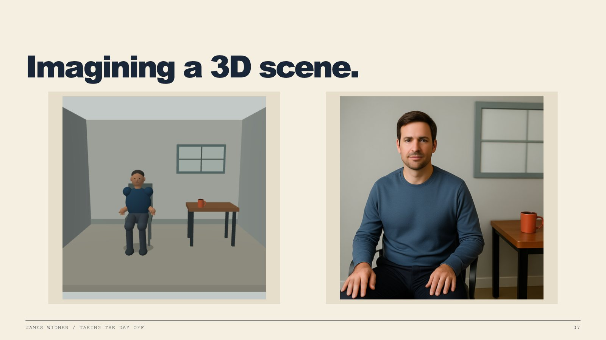
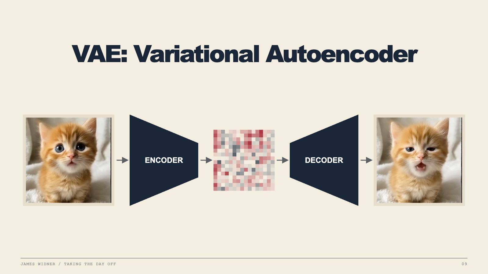
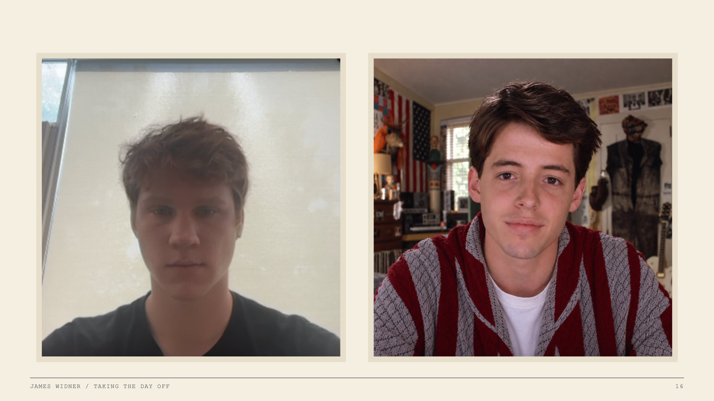
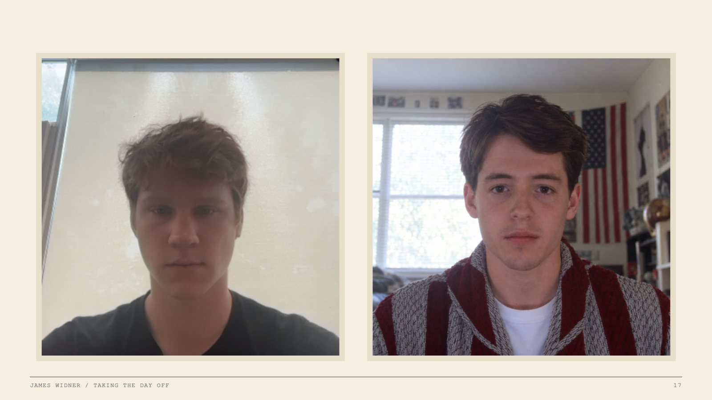
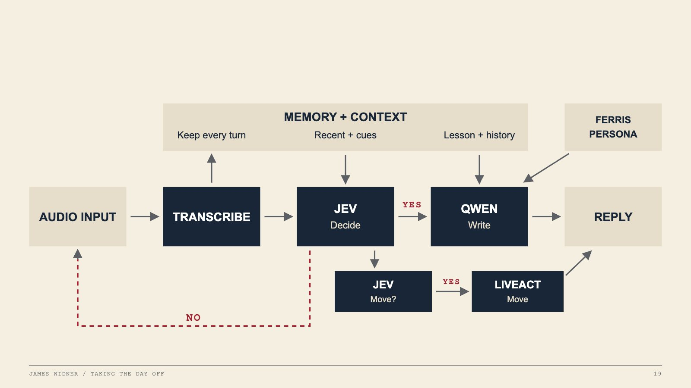
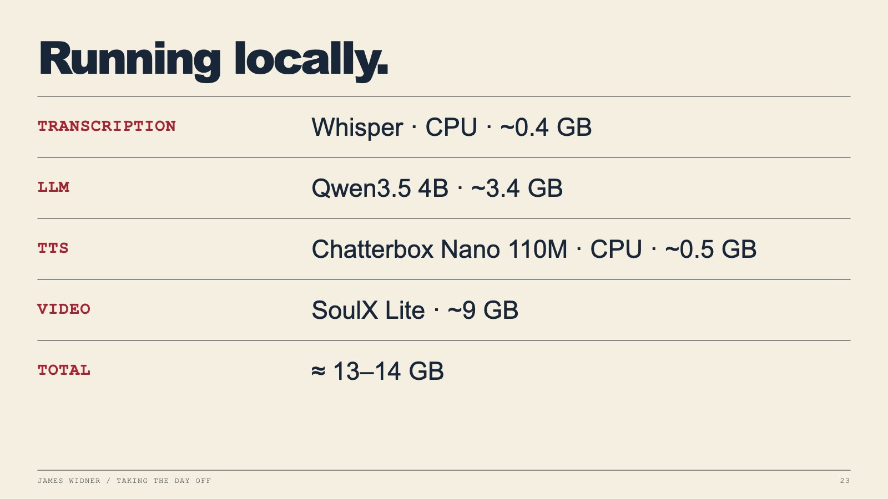

Talk write-up · BSides AtlantaJames Widner · 9 min read
Taking the Day Off: AI stand-ins for Zoom
This is the written version of a talk I gave at BSides Atlanta about faking presence on a Zoom call. I didn't build a new model from scratch. I took models that exist today and routed them together so that what shows up on camera reads as a believable person. Below are the methods I tried, including the uncanny ones.
Faking out teacher
Like a lot of people, I never thought it could happen to me. But in my senior year of college, I contracted senioritis. I've been absent nine times this semester, and it's getting pretty hard to come up with new illnesses.
Ferris only needed a mannequin and a tape recorder. Now class is on Zoom and the teacher wants your camera on, so a stand-in has to look like you, sound like you, and answer when your name is called.
The uncanny valley
Anything that earnestly tries to look human has to get across the uncanny valley before it can fly under the radar. Think of early robots with a silicone face stretched over a metal jaw. Or early AI video, where a normal face would melt in on itself because the model kept reimagining it frame after frame.
Keep those in mind for my first two video attempts.
Build the scene myself
My first idea was to pre-build the entire room so the AI only has to generate the part that changes. I made a simple 3D scene with a chair, a desk and a coffee mug, and loosely mapped generated textures onto everything. You could even loop a sky in the window. The upside is that the scene knows where everything is, so I can tell the character to sit, stand or pick up the cup.
So I ran the render through Qwen to turn it into a photograph. I held it to only 10 steps, and one frame still took 10 seconds and 36 GB of RAM. That's an okay-looking face, but it's just one frame.

Just for fun, and because it's Halloween, I made a video of it anyway.
This is what the bottom of the uncanny valley looks like.
VAE: variational autoencoder
The fastest way to change what a face looks like is a variational autoencoder. The encoder squeezes your photo into a low-dimensional vector, a small grid of numbers that doesn't look like anything. The latent space covers things like your mouth, your eyes and the way your face moves, and the model predicts where those should be for what you're saying. A decoder turns the numbers back into a picture.
Change the numbers a little each frame and decode each one. That's how you get a cat singing at a pretty fast pace.

Kitten: “When a Cat Sings APT” by @Geday21 on YouTube.
Watch the eyes. Watch the mouth.
Then I did that to my own face. These are four different face-animation models, all driven from pictures and recordings of me, playing on one clock: LeapTalk and SoulX FlashHead Lite on top, AvatarForcing and LiveAvatar below. The two shorter clips loop.
LeapTalk
SoulX FlashHead Lite
AvatarForcing
LiveAvatar
Because these models only move what's already there, they never invent new details. My shirt stays perfectly intact the whole time. But the face always looks like it's catching up to what I'm saying, and it's still sitting at the bottom of the valley.
Two strikes for video. So I took a step back and started over with the voice.
Cloning a voice
I knew voice cloning had been around for a while, but I wanted to understand how it actually works before I used it. If you think about how LLMs are predictive models, then you can understand how a few seconds of your voice can be cloned indefinitely. Take a few seconds of your voice and turn all the little attributes of it into semantic embeddings. Then have a model go through every voice it can possibly find and do the same thing. Now you have a giant map of voices, and you can pinpoint exactly where yours sits on it.
I used a model called Breeze because it has its own system prompt that says how to say it. That pushes your voice to a different spot on the map, so you can sound super confident or super nervous. That's really useful for a stand-in. He should sound confident when you ask what he had for breakfast, and a bit nervous when you ask when the test is due.
Here's what that sounds like, based on my voice.
“Life moves pretty fast. If you don’t stop and look around once in a while, you could miss it.”
AudioBreeze, cloned from eight seconds of my voice. I never said this sentence.
SoulX FlashHead
After a few million tokens of deep research, I found SoulX FlashHead from Soul AI Lab, built on Alibaba's Wan video model. It takes a flat photo of your floating head and your voice. It encodes the photo with the same VAE trick from the kitten, then runs just four clean-up steps, guided by the photo for who you are and the voice for what your mouth should be doing, and decodes new frames.
It's only trained on people talking on calls. That's why it's so good at calls, and also why it can't do hands.
How they made Wan fast
SoulX is a distilled version of Wan 2.1. Wan is a general text-to-video model, and SoulX starts from its small 1.3-billion-parameter version. Distilled here doesn't mean they shrank the model. It means they taught it to get the same answer in way fewer steps. They did it in two stages.
Stage 1: turn Wan into a talking head. They retrained it on VividHead, 782 hours of people talking to a camera, cut down from 10,000 hours of raw footage. Two changes make it about you. Your photo gets stacked right onto the noise it starts from, so every frame is built on top of your face instead of being reimagined. And it always hears the last eight seconds of audio, so short bits of speech still line up with the mouth. It also learns to keep going from its own previous frames, which is what lets it stream. That stage was 100,000 training steps on 32 GPUs.
Stage 2: distill it. Now there's a teacher and a student. The teacher is the stage-1 model, which is good but slow, and it gets to see the real previous frames. The student has to work with only a few steps, and it only gets to see its own previous output, the same as on a live call. The student's job is to make videos the teacher would agree with. It's also pulled toward the real footage so it doesn't wander off. During training the student generates up to five chunks in a row, so it learns to recover from its own mistakes instead of slowly melting into the uncanny valley.
The result runs in four steps. The Lite version also swaps in LTX's VAE, which squeezes the video about 32 times harder than Wan's own VAE, so there's much less to generate. That's how Lite hits 96 frames per second on a single RTX 4090. The Pro version keeps Wan's VAE, so it looks better, but it needs two RTX 5090s to keep up in real time.
Base
Wan 2.1 text-to-video, 1.3 billion parameters
Training
782 hours of people talking to a camera
Steps
4 denoising steps per chunk
Speed
96 fps on one RTX 4090 (Lite, from the paper). On my setup, 6 s of generation → 12.43 s of video
I gave SoulX a photo of my face and piped in some audio from Breeze.
“Ferris Bueller needed a mannequin and a tape recorder to skip school. I need a GPU and stable internet.” Delivery: confident and upbeat, then deadpan on the last line.
I was so excited when I first saw this in the KSU library that I hopped on a call and started texting it questions. Then I looked at him between answers, and he wasn't moving at all. Once SoulX finishes a line, it glides back to the neutral photo. That's why the face never distorts, but it also means he's completely static.
The hacky fix: pipe in quiet audio, sometimes not even audible, and tell him to hum or breathe. He keeps blinking and looks around a little, without actually saying anything.
Now let's do Ferris
Now that I had a stand-in for me, I tried one for Ferris. I made his portrait with GPT Image 2 and cloned his voice from the movie.
Video“I recall Central Park in fall.” Breeze voice, SoulX LiveAct face, first Ferris portrait.
It's okay, but something's off compared to mine. Put the two reference images side by side and you can see it. He has a spark of life in his eyes and he's well lit. I'm backlit and bored, which is a lot closer to the 782 hours of people on calls that SoulX learned from.

So I made him look way more depressed, and now he fits the model much better.

VideoFerris, talking: the same cleaned Breeze singing on the camera-matched portrait.
Now make him reactive
Now we've got audio and video, and both are fast. Next he has to answer when the teacher asks him something, know when he doesn't need to, and do it all quickly and in character. This is the loop:

Transcribe. Whisper turns the meeting audio into text. The transcript gets saved too, so even though you weren't on the call, you can catch up once you're back at your laptop.
Decide. Jev just came out, but for this you can think of it as a smart if statement: “You are Ferris Bueller. This person just said this. Should you respond?”
Write. If yes, Qwen 3.8 writes the reply. It has the whole lesson from the transcript, plus an AGENTS.md that says to act like Ferris Bueller.
Move. A second Jev check asks: are they asking me to do something, like turn my head or hold up a piece of paper? If so, LiveAct generates the move.
His voice reply takes about five seconds. A LiveAct move takes more like 30 to 40. LiveAct works a lot like SoulX: it starts from nine frames, makes you go do something, and comes back to those same nine frames at the end, so he can stay on the call forever without his room distorting.
The whole time, LiveAct is also making small clips in the background: Ferris sighing, Ferris looking around. New clips are very likely to play, and older ones get less likely the longer they've been around, so he isn't just staring straight at the camera. He should look like he's actually moving around and full of life.
Zoom thinks he's just a webcam
Ferris joins from a Windows VM running Chrome. His video goes in through OBS Virtual Camera, and his voice goes out through a virtual audio cable as his microphone. On the other side, Voicemeeter takes whatever the meeting says and hands it straight to Whisper.
The speaker and microphone have to be separate, because of one bug. If Ferris can hear Ferris while he's responding, Ferris starts talking to Ferris, and Ferris never stops talking.
After that, I give him an invite link to whatever Zoom call I'm supposed to be in, and he joins.
VideoThe classroom in Zoom gallery view, with sound.
They bought it.
The beauty of this whole thing is that it's all open-source models. I used the best I could get, Breeze and Qwen 3.8, but you can scale the LLM and TTS down to smaller ones and run all of it on one computer:

That's about 13 to 14 GB of RAM, which almost anyone can run on their own laptop. Which means you too can clone your own stand-in for Zoom anytime you want to skip class.
James Widner Researcher at Tensor Lab · CS student at KSU
Ferris Bueller's Day Off (1986) was written and directed by John Hughes. Film references are used for commentary; all Ferris voice and video in the demos is generated.